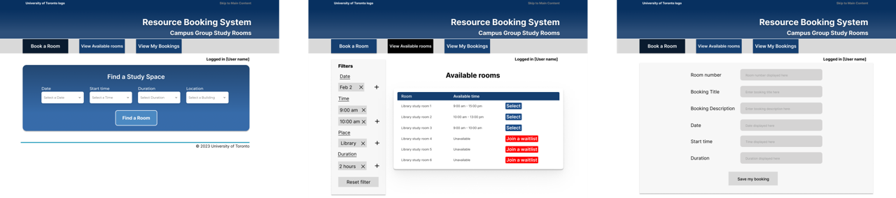
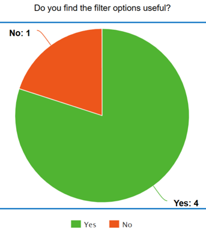
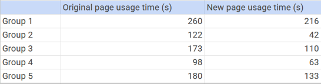
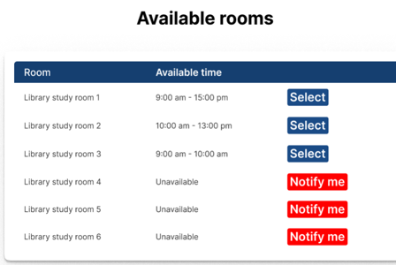
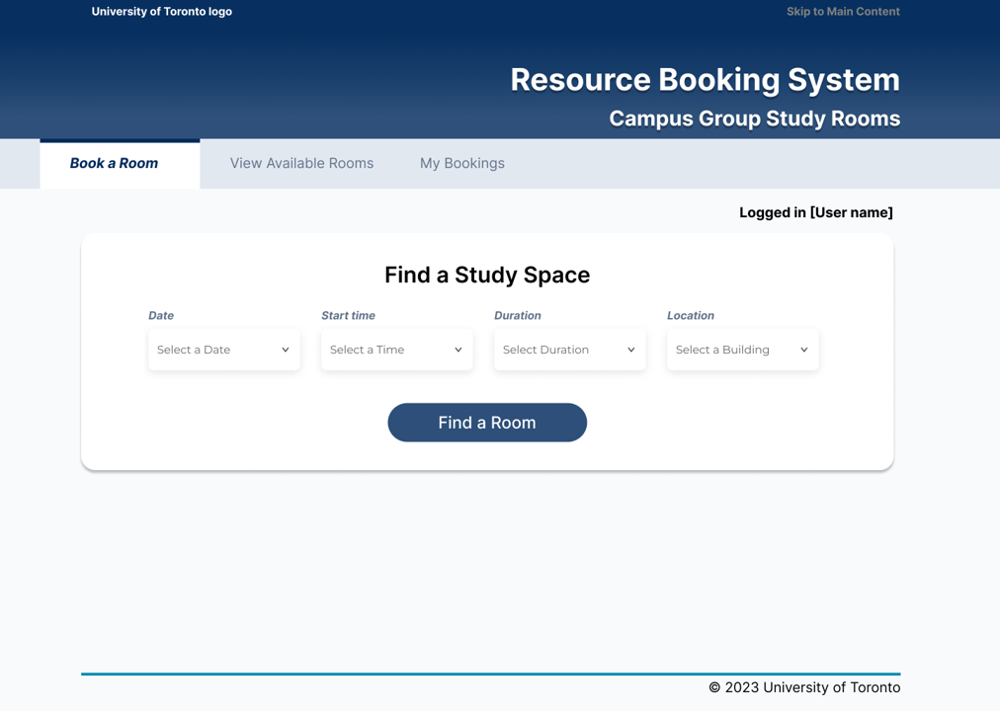
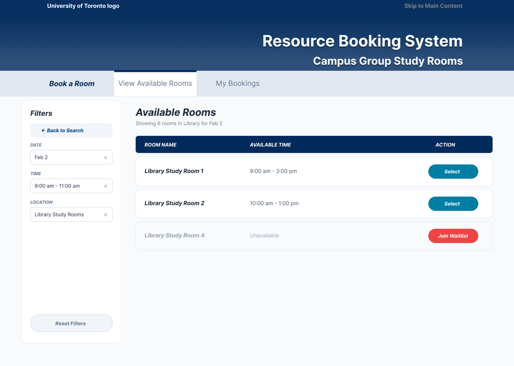
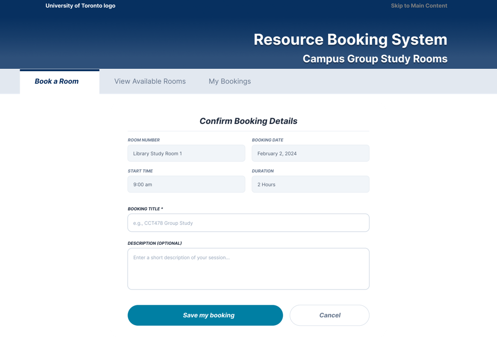
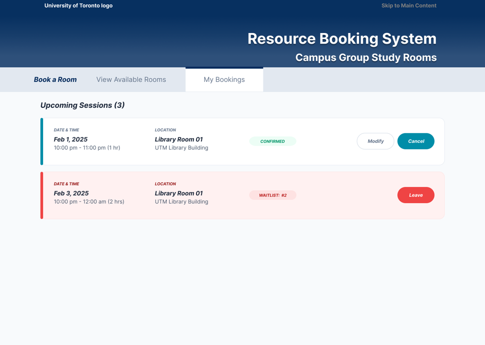

How I evaluated the system
I made measuring the original system the first step of the process. Before designing anything, I ran three methods to pin down where it actually broke: heuristic evaluation, usability testing, and A/B testing.
Heuristic evaluation
3 evaluators · 1–4 severity scaleAudited the live system against Nielsen's and Norman's principles, then ranked every issue by severity.
Usability testing
Think-aloud · post-session interviewTask-based sessions surfaced what tripped people up, and the interviews captured why.
A/B testing
16 participants · 5 groupsCompared legacy against the redesign on time, success, and preference.
The problems I found
Static Table Search
Availability was buried in a static table, forcing users to scan manually, row by row, for an open room.

Navigation & Data-Reset Bug
Switching between campus buildings reset the date to the current day, forcing users to repeatedly re-enter their search criteria.

Weak Signifiers
Primary action buttons were too small and low-contrast to be noticed, so users missed the next step.

Wireframes built to test the fixes
For each problem I found, I designed a mid-fidelity wireframe of the fix, then put it in front of users to test. The static table became a requirements-driven search, so I could measure whether the new flow actually performed better than the original.

Designing the A/B test & analyzing the data
I set up a controlled comparison: the legacy interface (A) against my redesigned flow (B), run with 16 participants split across 5 groups. Rather than rely on a single number, I measured three dimensions: how long the task took, whether people completed it successfully, and which version they preferred. That way efficiency, effectiveness, and satisfaction each had evidence behind it.
I visualized each dimension so the pattern was legible at a glance rather than buried in a spreadsheet: preference as a distribution, completion time as a direct A-vs-B comparison, and task success rate across both versions.
Preference distribution
Four of five groups favored requirements-based discovery over manual table scanning. A clear majority, not a marginal edge.

Completion time, A vs B
A direct comparison of task time on the legacy interface against the redesign confirmed the 53.8-second average saving.

Task success rate
Tracking successful completions and errors across both versions showed the redesign didn't just feel faster. People failed the task less often.

Where the numbers needed the interview to explain them
One result didn't fit the "redesign wins" story: a new "Waitlist" feature for peak demand confused 3 of 5 groups. The quantitative data flagged the friction, but it was the post-session interviews that explained it. The problem wasn't the concept, it was the button wording. That's exactly why I paired methods: the numbers told me where to look, the interviews told me why, and the fix turned out to be microcopy, not a redesign.

From evidence to the final design
Every change below traces back to a specific piece of evidence: a severity-ranked heuristic issue, a tested behavior, or an A/B result. Nothing here is a guess.
Requirements-Based Recommendations
Fixes Problem 01. Replaced manual table scanning with smart recommendations. Users input their needs and the system instantly surfaces relevant rooms.

Persistent Filters
Fixes Problem 02. Resolved the data-reset bug so filter criteria and search progress now persist across screens. No more re-entering data.

Clearer Signifiers & Layout
Fixes Problem 03. Larger primary buttons, stronger contrast, and more breathing room make the next action obvious at a glance.

Optimized Microcopy
Addresses the A/B finding. Rewrote button labels and feedback to eliminate the waitlist phrasing confusion testers ran into.

Impact & what I took away
The outcome: a redesign that cut average task time by 53.8 seconds and was preferred by 100% of testers, a measurable improvement to a tool thousands of students rely on.
The lesson: A/B testing surfaced a need I hadn't designed for. I'd optimized single-room booking, but users actually needed to chain multiple rooms together to cover a continuous time slot. That reframed efficiency for me. It isn't only speed and simplicity, it's flexibility in messy, real-world situations. On the next product, this is exactly the kind of hidden requirement I now design to catch early, before it shows up in testing.
More than the redesign itself, this project is where I learned to trust a structured evaluation process over instinct: to combine expert review, observed behavior, and quantitative testing so that every design decision can point back to evidence. That's the analytical discipline I bring to a product team.